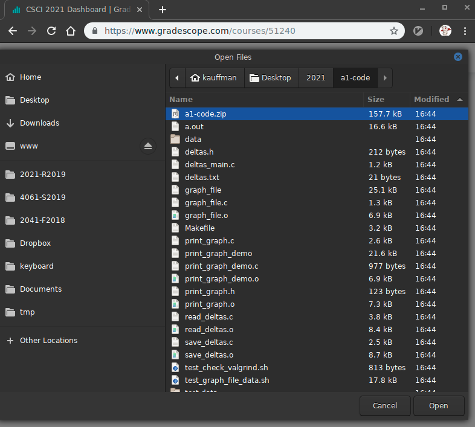
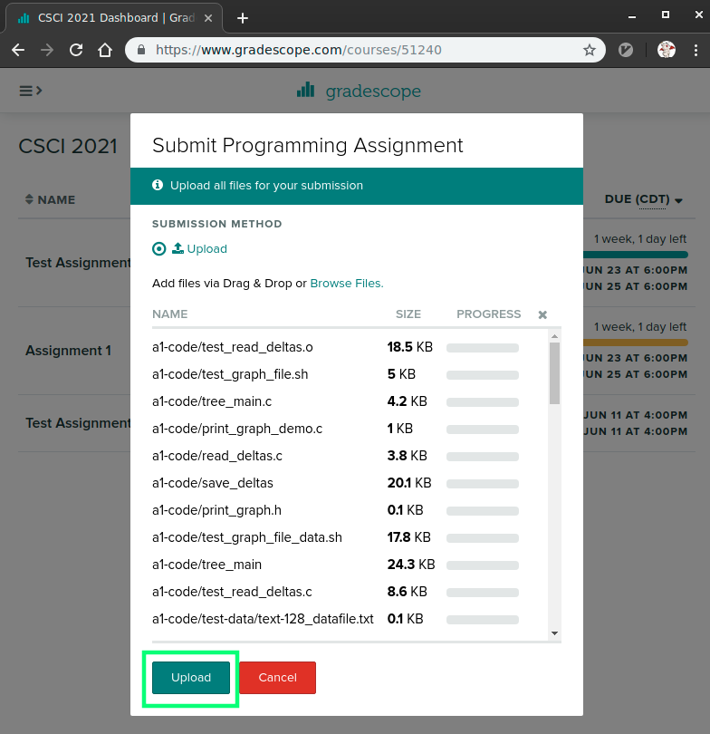
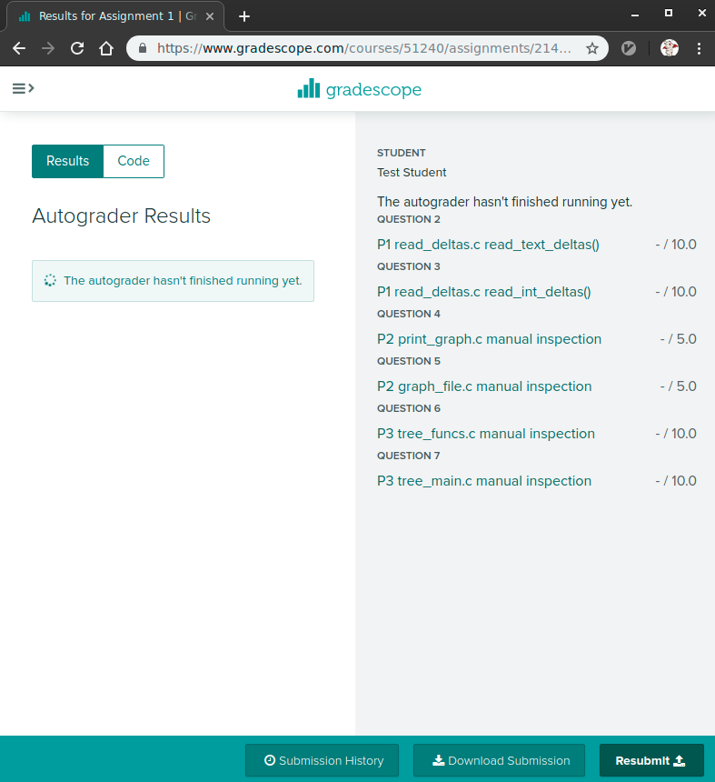
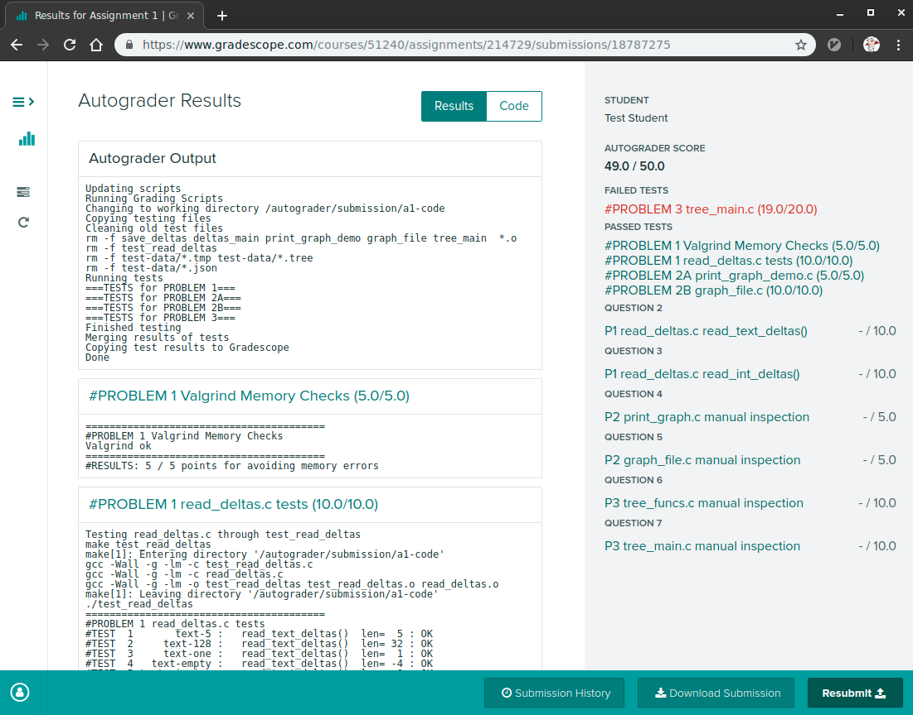

CSCI 5451 Assignment 2: Distributed and Shared Memory Programming
- Due: Wed 12-Apr by 11:59 pm
- Approximately 12.5% of total grade
- Submit to Gradescope
- You may work in groups of 2 and submit one assignment per group.
CODE DISTRIBUTION: a2-code.zip
GRADESCOPE TESTS: a2-gradescope-tests.zip
CHANGELOG:
- Thu Apr 27 05:05:38 PM CDT 2023
- The weight on this assignment incorrectly stated 30%; it is worth 12.5% of the overall grade.
- Wed Apr 12 08:20:16 AM CDT 2023
The deadline for the project has been extended to Wed 12-Apr.
The Gradescope submission link is open. The automated tests on Gradescope have no memory checking via Valgrind as this proved intractable to make work across systems. The Gradescope tests are linked here: a2-gradescope-tests.zip. Running them locally should reflect he behavior on Gradescope. Add the contents
Makefile-targetfile's contents to your Makefile and runmake test-gradescope- Fri Apr 7 02:57:14 PM CDT 2023
- The data file
digits_all_3e4.txtwas initially missing and has been added into the codepack. You can also download a stand-alone copy of it here: digits_all_3e4.txt - Wed Apr 5 03:16:50 PM CDT 2023
- Minor typo fixes to change to
heat_mpirather thanmpi_heat - Thu Mar 30 02:04:39 PM CDT 2023
- An update for the file
testkmeansserial.org is now available which uses the proper name
for the data directory; it should be
mnist-databut was wrong in the original version.
Table of Contents
1 Overview
The assignment involves programming in MPI and describing the results of running your programs with several different parameter sets. It is a programming assignment so dust off your C skills. We have to spent some class discussing issues related to the assignment but it may be a good idea to review the lecture videos for when this took place earlier in the semester. It will pay to start early to get oriented as debugging parallel programs can be difficult and requires time.
There are 3 problems to solve.
- Parallelize the heat program from A1 using MPI
- Ensure your serial version of K-Means is intact.
- Parallelize K-Means clustering using MPI.
For all several of the problems, after finishing your code, you will need to run some timing experiments and describe the results in a short text file.
2 Download Code and Setup
Download the code pack linked at the top of the page. Unzip this which will create a project folder. Create new files in this folder. Ultimately you will re-zip this folder to submit it.
| File | State | Notes |
|---|---|---|
| ALL PROBLEMS | ||
A2-WRITEUP.txt |
EDIT | Fill in timing tables and write answers to discussion questions |
Makefile |
Provided | Build file to compile all programs |
testy |
Testing | Test running script |
test_mpi.supp |
Testing | Suppression file to get Valgrind to hide some library errors |
msi-setup.sh |
Provided | Source this to set path for MPI on MSI machines |
mpi_hello.c |
Provided | Demo MPI program along with debug printing function |
| PROBLEM 1 | ||
heat_mpi.c |
CREATE | Problem 1 parallel version of heat |
heat_serial.c |
Provided | Problem 1 serial version of the heat problem |
heat-slurm.sh |
Provided | Problem 2 script to generate timing for heat on MSI |
test_heat.org |
Testing | Problem 1 tests for heat program |
| PROBLEM 2 | ||
kmeans_serial.c |
CREATE | Problem 2 serial version of K-means clustering to write in C |
kmeans.py |
Provided | Problem 2 serial version of K-means clustering in Python |
test_kmeans_serial.org |
Testing | Problem 2 tests for K-means clustering |
| PROBLEM 3 | ||
kmeans_mpi.c |
CREATE | Problem 2 serial version of K-means clustering |
test_kmeans_mpi.org |
Testing | Problem 2 tests for K-means clustering |
NOTE: The test_kmeans_mpi.org file will be released later |
3 A2-WRITEUP.txt Writeup File
Below is a blank copy of the writeup document included in the code pack. Fill in answers directly into this file as you complete your programs and submit it as part of your upload.
____________
A2 WRITEUP
____________
GROUP MEMBERS
-------------
- Member 1: <NAME> <X500>
- Member 2: <NAME> <X500>
Up to 2 people may collaborate on this assignment. Write names/x.500
above. If working alone, leave off Member 2.
ONLY ONE GROUP MEMBER SHOULD SUBMIT TO GRADESCOPE THEN ADD THEIR
PARTNER ACCORDING TO INSTRUCTIONS IN THE ASSIGNMENT WEB PAGE.
Problem 1: heat_mpi
===================
heat_mpi Timing Table
~~~~~~~~~~~~~~~~~~~~~
Fill in the following table on measuring the performance of your
`heat_mpi' program on MSI's Mesabi machine. Replace 00.00 entries with
your actual run times. You can use the provided `heat-slurm.sh' script
to ease this task. Submit it using `sbatch heat-slurm.sh' and extract
the lines marked `runtime:'.
-----------------------------
Width
Procs 6400 25600 102400
-----------------------------
1 00.00 00.00 00.00
2 00.00 00.00 00.00
4 00.00 00.00 00.00
8 00.00 00.00 00.00
10 00.00 00.00 00.00
16 00.00 00.00 00.00
32 00.00 00.00 00.00
64 00.00 00.00 00.00
128 00.00 00.00 00.00
-----------------------------
heat_mpi Discussion Questions
~~~~~~~~~~~~~~~~~~~~~~~~~~~~~
Analyze your table of results and answer the following questions.
1. Did using more processors result in speedups?
2. Describe any trends or anomalies you see in the timings and
speculate on their causes - e.g. was there are a steady increase in
runtimes, steady decrease, or jagged changes in timing?
3. Try to explain how number of processors and problem size seem to
affect runtimes/speedup in the problem. Consider that most Mesabi
Nodes have 24 cores on them. Comment on whether this number seems
to affect the performance of the runs you see.
Problem 2: kmeans_serial vs kmeans_mpi
======================================
Discuss how you chose to parallelize your serial version of K-means in
the program `kmeans_mpi.c'. Answer the following questions briefly.
1. How is the input and output data partitioned among the processors?
2. What communication is required throughout the algorithm?
3. Which MPI collective communication operations did you employ?
Problem 3: kmeans_mpi
=====================
kmeans_mpi Timing Table
~~~~~~~~~~~~~~~~~~~~~~~
Fill in the following table on measuring the performance of your
`kmeans_mpi' program on MSI's Mesabi machine. Replace 00.00 entries
with your actual run times. You can use the provided `kmeans-slurm.sh'
script to ease this task.
The columns are for each of 3 data files that are provided and run in
the job script.
digits_all_5e3.txt digits_all_1e4.txt
-------------------------------------------------------------------
Data File
Procs digits_all_5e3.txt digits_all_1e4.txt digits_all_3e4.txt
-------------------------------------------------------------------
1 00.00 00.00 00.00
2 00.00 00.00 00.00
4 00.00 00.00 00.00
8 00.00 00.00 00.00
10 00.00 00.00 00.00
16 00.00 00.00 00.00
32 00.00 00.00 00.00
64 00.00 00.00 00.00
128 00.00 00.00 00.00
-------------------------------------------------------------------
kmeans_mpi Discussion Questions
~~~~~~~~~~~~~~~~~~~~~~~~~~~~~~~
Analyze your table of results and answer the following questions.
1. Did using more processors result in speedups?
2. Describe any trends or anomalies you see in the timings and
speculate on their causes - e.g. was there are a steady increase in
runtimes, steady decrease, or jagged changes in timing?
3. Try to explain how number of processors and problem size seem to
affect runtimes/speedup in the problem. Consider that most Mesabi
Nodes have 24 cores on them. Comment on whether this number seems
to affect the performance of the runs you see.
4 mpi_hello.c: A Sample MPI Program
A simple sample program called mpi_hello.c is provided as part of
the code distribution. This program includes a useful utility for
debugging purposes.
dprintf(fmt,...)is likeprintf()except that it only prints if the environment variableDEBUGis set and displays processor information in the prefixed with|DEBUG. This enables debugging messages to be printed during development but are disabled during normal runs.
Compiling and running the program can be done locally on any machine with MPI installed as follows.
>> . mpiopts.sh # set the MPIOPTS environment variable >> mpirun $MPIOTS -np 4 ./mpi_hello # run the code normally Hello world from process 0 of 4 (host: val) Hello from the root processor 0 of 4 (host: val) Hello world from process 2 of 4 (host: val) Hello world from process 1 of 4 (host: val) Hello world from process 3 of 4 (host: val) >> DEBUG=1 mpirun -np 4 ./mpi_hello # enable debug messages for this run Hello world from process 2 of 4 (host: val) Hello world from process 3 of 4 (host: val) Hello world from process 1 of 4 (host: val) |DEBUG Proc 002 / 4 PID 1484871 Host val| Debug message from processor 2 |DEBUG Proc 003 / 4 PID 1484872 Host val| Debug message from processor 3 |DEBUG Proc 001 / 4 PID 1484870 Host val| Debug message from processor 1 Hello world from process 0 of 4 (host: val) Hello from the root processor 0 of 4 (host: val) |DEBUG Proc 000 / 4 PID 1484869 Host val| Debug message from processor 0
Debug printing takes time and should be turned off when reporting
runtimes for programs. Using the shell commands below ensures that the
DEBUG environment variable is unset so debug printing is turned off
for further runs.
>> echo $DEBUG # check value of DEBUG env var 1 # currently defined >> unset DEBUG # unset it to remove it >> echo $DEBUG # now has no value >> mpirun -np 4 ./mpi_hello # this run has no debug output P 0: Hello world from process 0 of 4 (host: val) Hello from the root processor 0 of 4 (host: val) P 2: Hello world from process 2 of 4 (host: val) P 3: Hello world from process 3 of 4 (host: val) P 1: Hello world from process 1 of 4 (host: val)
NOTE: the dpprintf() function is somewhat inefficient even when
debug output is turned off as it requires calls to getenv(). There
are more efficient alternatives to this that involve macros but that
also involves recompiling code. Since this is a learning exercise we
can tolerate some performance hits in the name of easier debugging. In
the wild you may want to consider alternative debug printing
techniques.
5 MPI Jobs on MSI Machines
The Minnesota Supercomputing Institute has facilities to run parallel programs which we will use to evaluate our code. Jobs are handled in two ways
- Interactive Jobs which can be run on login nodes. SSH to a machine, compile your code and run it. You may use a limited number of processors for this but it is extremely useful while developing and testing. Login nodes are shared among all users logged in so performance numbers are unreliable (e.g. affected by other activity by other users).
- Batch Jobs which are submitted to a job queue to be run on via
the
sbatch job.shcommand. When a job is selected to be run, it is assigned to run exclusively on some compute nodes so that it may achieve reliable and maximal performance. This is where timing results will be reported.
We will use the mesabi MSI system which can be reached via SSH
connections:
>> ssh kauffman@mesabi.msi.umn.edu password: .......... Duo two-factor login for kauffman Enter a passcode or select one of the following options: 1. Duo Push to XXX-XXX-4971 2. Phone call to XXX-XXX-4971 Passcode or option (1-2): 1 ... ln0006 [~]%
It is suggested that you set up SSH keys to ease login to Mesabi though you will need to continue Duo-authenticating during login.
5.1 Software Modules on MSI
Additionally, MSI uses a software modules system to specify use of different libraries and code packages. To access the most current version of MPI, you will need to run the following command in your login shell.
# load mpi software into path ln0006 [~]% module load ompi/4.0.0/gnu-8.2.0-centos7 # alternative using script in code pack directory ln0006 [~]% source a2-code/msi-setup.sh # check version of MPI ln0006 [~]% which mpicc /panfs/roc/msisoft/openmpi/el6/4.0.0/gnu-8.2.0.CentOS7/bin/mpicc ln0006 [~]% which mpirun /panfs/roc/msisoft/openmpi/el6/4.0.0/gnu-8.2.0.CentOS7/bin/mpirun
Note that the msi-setup.sh script is provided as an alternative and
can be sourced.
The list of all modules available is seen via module avail. Note
that the version of MPI we will use is the most current but not the
default.
5.2 Batch Jobs on MSI
Use the sbatch job.sh command to submit a job to the SLURM job
queue. To ease timing evaluations, a job script with required
parameters has been provided for all of the problems. For instance,
for the Heat problem, use the script heat-slurm.sh. Checking
on the status of jobs in the queue is done via squeue -u
username. The provided scripts have the following properties:
Require you to change the directory of your code in it but otherwise do not need to be modified. Look for the line
# ADJUST: location of executable cd ~/mesabi-a2-5451/
in the script and change the target directory to wherever you have placed your code. Ensure it is compiled ahead of time.
- Will run MPI jobs for the required programs on the required number of processors
- Output for the job will be left in a file like
heat-slurm.sh.job-156425531.outwhich starts with the job script name Lines in the script that are marked
runtime:report wall clock time along with the problem parameters in it these appear likeruntime: procs 16 width 102400 realtime 5.15
and make it possible to use
grepor other tools to quickly fish out the lines reporting runtimes for construction of the results.- Will charge compute time to the CSCI 5451 class account via the
--accountoption to SLURM - The scripts have the correct MPI software module loaded at the
beginning of them and will call
mpirunon the program.
The session below demonstrates use of sbatch and squeue
ln0006 [mesabi-a2-5451]% sbatch heat-slurm.sh # submit script to run for heat jobs
Submitted batch job 156504577
ln0006 [mesabi-a2-5451]% squeue -u kauffman # check on the submitted jobs by user kauffman
JOBID PARTITION NAME USER ST TIME NODES NODELIST(REASON)
156504535 small kmeans-s kauffman PD 0:00 6 (Priority)
156504577 small heat-slu kauffman PD 0:00 6 (None)
# jobs are PD - Pending but not being run yet
# a useful command to "watch" the queue, press Ctl-c to kill the watch
ln0006 [mesabi-a2-5451]% watch 'squeue -u kauffman'
# later....
ln0006 [mesabi-a2-5451]% squeue -u kauffman # check on the submitted jobs by user kauffman
JOBID PARTITION NAME USER ST TIME NODES NODELIST(REASON)
ln0006 [mesabi-a2-5451]% # no jobs listed, all jobs done with results
ln0006 [mesabi-a2-5451]% ls *156504577* # check for output job
heat-slurm.sh.job-156504577.out
6 Testing MPI Codes
6.1 On MSI Machines
Testing out codes on MSI machines is ideal as it is the same
environment as what the timing evaluation will involve. The same
commands can be used (load MPI module, compile, run with mpirun -np
4), with the minor limitation that there is a cap on the number of
processors that can be tested interactively.
6.2 On CSE Labs Machines
CSE Labs machines have an MPI installation (sort of) set up on the
machines cuda01-cselabs.umn.edu to cuda05-cselabs.umn.edu. By
logging in, one will have access on those machines to mpicc and
mpirun commands. However, the configuration is a bit unwieldly and
requires some setup. Here are some gotchyas to keep in mind and move
you towards the MSI machines.
- You must use a Hostfile via
mpirun -hostfile hf.txtand due to the configuration problems on these systems, the hosts will need to be listed via their IP address rather than their symbolic name. - You will need to have SSH keys setup up for password-free login. For details on how to do this see this tutorial.
- All of the
cuda-NNmachines will need to be in your authorized host file. The easiest way to do this is to log in tocuda01then, from that machine, SSH tocuda02, thencuda03, and so forth up tocuda05. This only needs to be done once but if you fail to do so, MPI runs beyond the local number of processors will hang silently.
Surmounting these factors is not difficult but creates enough friction that MSI is easier and preferred for testing.
6.3 On Home Machines
Setting up a home MPI installation is another option. In most cases a
Linux or Unix system can install OpenMPI with a package manager and by
using mpirun --oversubscribe one can test on a number of processors
larger than available as physical cores on the system. Do not expect
speedup in these cases but it is extremely useful for debugging.
7 Problem 1: MPI Heat
7.1 The Heat Problem
A slightly modified version of the heat propagation simulation from
HW1 and in-class discussion is in the code pack and called
heat_serial.c. This program can be compiled and run with the
provided Makefile as follows.
>> make heat_serial # build program gcc -g -Wall -o heat_serial heat_serial.c >> ./heat_serial # run with no args to show help info usage: ./heat_serial max_time width print max_time: int width: int print: 1 print output, 0 no printing >> ./heat_serial 10 8 1 # run for 10 timesteps with 8 "elements" | 0 1 2 3 4 5 6 7 ---+------------------------------------------------- 0| 20.0 50.0 50.0 50.0 50.0 50.0 50.0 10.0 1| 20.0 35.0 50.0 50.0 50.0 50.0 30.0 10.0 2| 20.0 35.0 42.5 50.0 50.0 40.0 30.0 10.0 3| 20.0 31.2 42.5 46.2 45.0 40.0 25.0 10.0 4| 20.0 31.2 38.8 43.8 43.1 35.0 25.0 10.0 5| 20.0 29.4 37.5 40.9 39.4 34.1 22.5 10.0 6| 20.0 28.8 35.2 38.4 37.5 30.9 22.0 10.0 7| 20.0 27.6 33.6 36.3 34.7 29.8 20.5 10.0 8| 20.0 26.8 32.0 34.1 33.0 27.6 19.9 10.0 9| 20.0 26.0 30.5 32.5 30.9 26.5 18.8 10.0 >> ./heat_serial 10 8 0 # same run but don't print output, useful for timing as output takes a while >> ./heat_serial 12 5 1 # run for 12 timesteps with 5 columns / elements | 0 1 2 3 4 ---+------------------------------- 0| 20.0 50.0 50.0 50.0 10.0 1| 20.0 35.0 50.0 30.0 10.0 2| 20.0 35.0 32.5 30.0 10.0 3| 20.0 26.2 32.5 21.2 10.0 4| 20.0 26.2 23.8 21.2 10.0 5| 20.0 21.9 23.8 16.9 10.0 6| 20.0 21.9 19.4 16.9 10.0 7| 20.0 19.7 19.4 14.7 10.0 8| 20.0 19.7 17.2 14.7 10.0 9| 20.0 18.6 17.2 13.6 10.0 10| 20.0 18.6 16.1 13.6 10.0 11| 20.0 18.0 16.1 13.0 10.0
7.2 MPI Heat
In our Thu 02-Feb Lecture we discussed an MPI version of the heat transfer problem and it may be worthwhile to review this lecture to recall some details of data distribution and communication.
The central task of this problem is to create an MPI version of this
program named heat_mpi which performs the same task but uses MPI
calls to perform the heat calculations on distributed memory
machines. Once completed, this program can be run as follows.
>> make heat_mpi # build MPI version of heat program mpicc -g -Wall -o heat_mpi heat_mpi.c >> source mpiopts.sh # set the MPIOPTS env variable, used to suppress warnings >> mpirun $MPIOPTS -np 2 ./heat_mpi 10 8 1 # run using 2 procs, 10 steps, 8 elements = 4 per proc | 0 1 2 3 4 5 6 7 ---+------------------------------------------------- 0| 20.0 50.0 50.0 50.0 50.0 50.0 50.0 10.0 1| 20.0 35.0 50.0 50.0 50.0 50.0 30.0 10.0 2| 20.0 35.0 42.5 50.0 50.0 40.0 30.0 10.0 3| 20.0 31.2 42.5 46.2 45.0 40.0 25.0 10.0 4| 20.0 31.2 38.8 43.8 43.1 35.0 25.0 10.0 5| 20.0 29.4 37.5 40.9 39.4 34.1 22.5 10.0 6| 20.0 28.8 35.2 38.4 37.5 30.9 22.0 10.0 7| 20.0 27.6 33.6 36.3 34.7 29.8 20.5 10.0 8| 20.0 26.8 32.0 34.1 33.0 27.6 19.9 10.0 9| 20.0 26.0 30.5 32.5 30.9 26.5 18.8 10.0 >> mpirun $MPIOPTS -np 4 ./heat_mpi 6 12 1 # run using 4 procs, 6 steps, 12 elements = 3 per proc | 0 1 2 3 4 5 6 7 8 9 10 11 ---+------------------------------------------------------------------------- 0| 20.0 50.0 50.0 50.0 50.0 50.0 50.0 50.0 50.0 50.0 50.0 10.0 1| 20.0 35.0 50.0 50.0 50.0 50.0 50.0 50.0 50.0 50.0 30.0 10.0 2| 20.0 35.0 42.5 50.0 50.0 50.0 50.0 50.0 50.0 40.0 30.0 10.0 3| 20.0 31.2 42.5 46.2 50.0 50.0 50.0 50.0 45.0 40.0 25.0 10.0 4| 20.0 31.2 38.8 46.2 48.1 50.0 50.0 47.5 45.0 35.0 25.0 10.0 5| 20.0 29.4 38.8 43.4 48.1 49.1 48.8 47.5 41.2 35.0 22.5 10.0 >> time mpirun $MPIOPTS -np 4 ./heat_mpi 6 12 0 # same as above but suppress output and time the run real 0m0.168s # wall clock time to report for the run user 0m0.102s sys 0m0.073s
7.3 Features of heat_mpi
- Name your program
heat_mpi.cto be compatible with the providedMakefile. It has a target to build bothheat_serialandheat_mpiif you name the source fileheat_mpi.c. The serial version of the program provided accepts 3 command line arguments:
- Number of time steps (rows in output)
- Width of the rod in elements (columns of output)
- 1 or 0 to indicate whether final output should be printed or suppressed.
The MPI version should allow for the same arguments so that runs like the following will work.
>> mpirun $MPIOPTS -np 4 ./heat_mpit 10 40 1 # 4 procs, 10 timesteps, width 40, show output ... # output for the run >> mpirun $MPIOPTS -np 4 ./heat_mpi 10 40 0 # same but no output >>
There is a small script called
mpiopts.shwhich can set options for MPI runs to suppress unnecessary warning messages. While experimenting with your programs in a shell, you can source this script via the following.>> source mpiopts.sh # sets variable MPIOPTS >> echo $MPIOPTS # show value of MPIOPTS --mca opal_warn_on_missing_libcuda 0 >> . mpiopts.sh # same as using "source" to execute script in current shell
- Divide the problem data so that each processor owns only a portion of the columns of the heat matrix as discussed in class.
- Utilize send and receives or the combined
MPI_Sendrecvto allow processors to communicate with neighbors. - Utilize a collective communication operation at the end of the computation to gather all results on Processor 0 and have it print out the entire results matrix if command line args indicate this is necessary.
- Verify that the output of your MPI version is identical to the output of the serial version which is provided. There are a series of automated tests that help with this which are described later.
- To be compatible with the automated tests,
heat_mpimust produce an exit code of 0; e.g.return 0at the end ofmain()as is done inheat_serial.c. Your MPI version is only required to work correctly in the following situations:
- The width of the rod in elements is evenly divisible by the number of processors being run.
- The width of the rod is at least three times the number of processors so that each processor would have at least 3 columns associated with it.
That means the following configurations should work or fail as indicated.
#Procs Width Works? Notes 1 1 no not enough cols 1 2 no not enough cols 1 3 yes take special care for 1 proc 4 4 no only 1 column per proc 4 8 no only 2 columns per proc 4 12 yes at least 3 cols per proc 4 16 yes at least 3 cols per proc 4 15 no uneven cols 3 9 yes 3 cols per proc, evenly divisible 4 40 yes evenly divisible, >= 3 cols per proc Runs that are marked with "no" in the "Works?" column will not be tested so are free to do anything (segfault, work correctly, print an error and exit immediately, etc.).
7.4 Written Summary of the heat_mpi Results
Included with the project code is the file A2-WRITEUP.txt which has
a timing table to fill in and a few discussion questions which should
be answered.
Time your runs on MSI's Mesabi Cluster. You can SSH to it via ssh
myX500@mesabi.msi.umn.edu. Gathering data for the timing table is
eased via the provided heat-slurm.sh job script which will run jobs
with each of the parameters in the timing table listed. Timing results are
printed with the string runtime: prepended to each line. See the
Earlier examples of how to use sbatch, check the queue via squeue
and find the output files for the completed jobs.
7.5 Automated Tests for heat_mpi
A battery of automated tests are provided to evaluate whether
heat_mpi is producing correct results on some small examples. These
are present in the file test_heat.org and are run via the testy
script. This can be done manually or via make test-prob1. Compliant
programs will give results that look like the following.
>> unset DEBUG # enusre that DEBUG output is disabled >> make test-prob1 # build prob1 program and run tests mpicc -g -Wall -o heat_mpi heat_mpi.c ./testy test_heat.org ============================================================ == testy test_heat.org == Running 10 / 10 tests 1) Procs=1 Width=20 : ok 2) Procs=1 Width=20 Valgrind : ok 3) Procs=2 Width=20 : ok 4) Procs=2 Width=20 Valgrind : ok 5) Procs=2 Width=20 No output : ok 6) Procs=2 Width=6 : ok 7) Procs=2 Width=6 Valgrind : ok 8) Procs=4 Width=20 : ok 9) Procs=4 Width=20 Valgrind : ok 10) Procs=4 Steps=30 Width=40 : ok ============================================================ RESULTS: 10 / 10 tests passed
Failed tests will provide a results file with information that can be studied to gain insight into detected problems with the programs.
Tests are limited to 4 processors max. Some tests run codes under Valgrind to detect memory problems and help diagnose segmentation faults.
7.6 Grading Criteria for Problem 1 grading 40
| CRITERIA | |
|---|---|
| 10 | Code compiles via make prob1 and passes automated tests via make test-prob1 |
| 10 | Cleanly written code with good documentation according to a Manual Inspection |
| 10 | Written report includes timings table described above |
| 10 | Written report includes answers to discussion questions written above. |
8 Problem 2: Serial K-Means Clustering
Assignment 1 introduced the K-Means clustering algorithm and provided a Python. If you did not finish your C port of this program, do so now as the MPI version should be based upon it.
Make sure to name your program kmeans_serial.c to be compatible with
the Makefile provided in the codepack.
Some automated tests are provided for the serial program which check that the output produced by the program and the clusters it generates match expectations. The tests also evaluate whether there any memory problems with the program.
9 Problem 3: MPI K-Means Clustering
Implement parallel version of the K-means algorithm for distributed
memory using MPI calls. Name your program kmeans_mpi.c to be
compatible with the provided Makefile. We have discussed the basic
strategy for parallelizing the code during lecture on Thu 16-Feb so
review the discussion present there if you need guidance.
9.1 Implementation Requirements
kmeans_mpiwill accept the same command line arguments as the Serial version. As all MPI programs, it will be launched viampirunsuch as inmpirun -np 4 kmeans_mpi mnist-data/digits_all_1e2.txt 10 outdir1
- The behavior and output of the MPI version will match the serial version in format; e.g. printed messages and produced output files.
All I/O will be performed only by the root processor. Only the root Processor 0 will read the data file specified for the program. It will send required information to other processors that are needed by them to contribute to the communication. At the end of the computation, the root processor will be sent all cluster assignments and cluster centers to be written to files by the root processor.
This requirement is for learning purposes only: in a production setting, one would look to have each processor perform I/O operations in parallel if the system supported it. Such parallel I/O would be facilitated by a binary storage format rather than our text-based version. However, this assignment is designed to gain practice using MPI calls and distributing data then accumulating presents a good opportunity for this.
- The algorithm implemented in the MPI version will follow an input partitioning approach as was discussed in lecture. Other possibilities exist but input partitioning is the most likely to be generally useful and lead to speedups.
Implementation Notes
- As before, follow the general flow provided in the Python implementation. The MPI version should produce identical results and hopefully faster.
- In our Thu Feb-16 lecture we had a class discussion on how to implement K-Means clustering for distributed memory machines. It may be worthwhile to review this discussion as it lays out some information of data distribution and communication required.
9.2 Grading Criteria for Problem 3 grading 50
Test cases will be provided for kmeans_mpi.c but will be released
some time after the initial project is distributed. The Makefile
contains a target for this, just requires the missing
test_kmeans_mpi.org file which will have the tests.
| CRITERIA | |
|---|---|
| 10 | Code compiles via make prob3, honors command line parameters on interactive runs. |
| 10 | Passes automated tests via make test-prob3 |
| 5 | Cleanly written code with good documentation and demonstrates appropriate use of |
| MPI function calls to implement the algorithm such as Broadcast, Scatter, Reduction, Gather, etc. | |
| 5 | Code handles data size that is not evenly divided by the number of processors by using appropriate |
"vector" versions of MPI calls like MPI_Scatterv() |
|
| 10 | Written report includes timings table described above |
| 10 | Written report includes answers to discussion questions written above. |
10 Project Submission on Gradescope
NOTE 1: Submission to Gradescope is not yet open; follow the instructions in this section when it opens.
NOTE 2: The instructions below pertain to another class and some of
the pictures mention "project" and p1-code which in our case is
"assignment" and a2-code. The instructions apply nonetheless and
boil down to:
- Create a zip of your assignment code via
make zip - Upload the code to Gradescope
- Check that the automated tests that run on Gradescope match you expectations.
- Add you partner to your submission. Only one partner should submit the code.
10.1 Submit to Gradescope
Some of the pictures below mention 'Assignment' which is now 'Project' and may mention some files that are not part of the current project. The process of uploading submission is otherwise the same.
In a terminal, change to your project code directory and type make zip which will create a zip file of your code. A session should look like this:
> cd Desktop/5451/a2-code # location of assignment code > ls Makefile dense_pagerank_mpi.c heat_serial.c ... > make zip # create a zip file using Makefile target rm -f a2-code.zip cd .. && zip "a2-code/p1-code.zip" -r "a2-code" adding: a2-code/ (stored 0%) adding: a2-code/Makefile (deflated 68%) adding: a2-code/dense_pagerank_mpi.c (deflated 69%) adding: a2-code/test_dense_pagerank_mpi.org (deflated 71%) ... Zip created in a2-code.zip > ls a2-code.zip a2-code.zipLog into Gradescope and locate and click 'Assignment 2' which will open up submission

Click on the 'Drag and Drop' text which will open a file selection dialog; locate and choose your
a2-code.zipfile
This will show the contents of the Zip file and should include your C source files along with testing files and directories.

Click 'Upload' which will show progress uploading files. It may take a few seconds before this dialog closes to indicate that the upload is successful. Note: there is a limit of 256 files per upload; normal submissions are not likely to have problems with this but you may want to make sure that nothing has gone wrong such as infinite loops creating many files or incredibly large files.
WARNING: There is a limit of 256 files per zip. Doing
make zipwill warn if this limit is exceeded but uploading to Gradescope will fail without any helpful messages if you upload more the 256 files in a zip.
Once files have successfully uploaded, the Autograder will begin running the command line tests and recording results. These are the same tests that are run via
make test.
When the tests have completed, results will be displayed summarizing scores along with output for each batch of tests.

- Don't forget to add you partner to your submission after uploading. Only one partner needs to submit the code.
10.2 Late Policies
You may wish to review the policy on late project submission which will cost 1 Engagement Point per day late. No projects will be accepted more than 48 hours after the deadline.